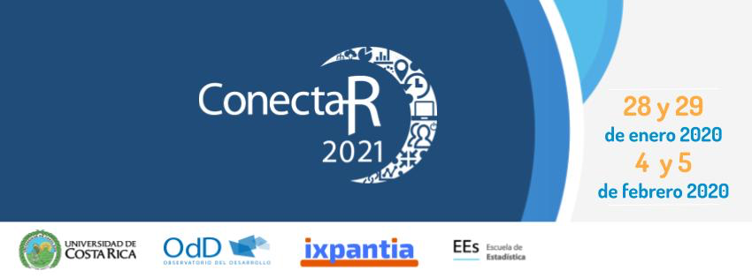

We invite you to participate in the Virtual Meeting of R Users in Latin America ConectaR2021. We will create a virtual space to share different experiences of the community of R users in industry, academia, citizen science and education, during January 28 - 29 and February 4 - 5. In this way we want to encourage the use of R, encourage learning and the development of packages in R adapted to our needs in Latin America.
The activities will be both synchronous and asynchronous, our objective is to facilitate an open, inclusive communication space, and with technological facilities to get to know each other better, exchange ideas and support new collaborations between Spanish-speaking R users.
The topics we focus on are:
Teaching - Industry - Academy - Government and Citizen Science
And more specifically in: